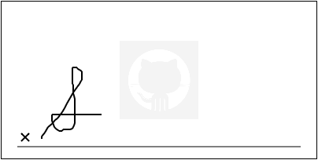

Signature.js
Lightweight & self-contained JavaScript signature capture tool
This project is maintained by maxwells
Signature.js
Super lightweight (~7kb minified), self-contained (no libraries), HTML 5 & Javascript signature capture tool.
Examples
If these examples do not work on your device, please note it in a new issue
Regular old signature pad
Signature pad with watermark
Signature pad with explanation
- Watermarking
- Saving images as PNG (with proper backend)
- Supports multiple signature captures on a single page
- Explanation text
- Supports
- Desktop
- Chrome
- Safari
- FireFox
- iOS
- Safari
- Chrome
- todo: testing
Pipeline
- acceptance/retry functionality
- export as SVG
- export as JSON vectors
Usage
The following HTML and CSS snippets hold true for the following example usages
#my-signature-div { width: 400px; height: 200px; border: thin solid black; }
<div id="my-signature-div"></div>
Basic
var signature = new Signature({ displayId: 'my-signature-div' });

Watermark
var signature = new Signature({
displayId: 'my-signature-div',
watermark: {
url: 'http://www.w3schools.com/images/compatible_chrome.gif',
position: Signature.CENTER, // any cardinal/ordinal direction or CENTER (defaults to NORTH)
alpha: 0.2, // 0-1, representing transparency (default: 0.2)
width: 100, // width of displayed watermark
height: 100 // height of displayed watermark
}
});

Explanation Text
var signature = new Signature( {
displayId: 'my-signature-div',
explanation: {
text: "Signature signifies acceptace of aforementioned end user license agreement.", // set text for explanation
font: "georgia", // choose a font (defaults to sans-serif)
color: "#aaa", // defaults to #000
size: 12, // defaults to 10 point
lineHeight: 13, // defaults to 1.2em
maxWidth: 150, // defaults to entire width
position: Signature.NORTH_EAST // any cardinal/ordinal direction or CENTER (defaults to NORTH)
}
});